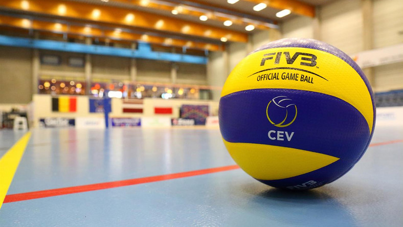

Mój ulubiony sport
Siatkówka to świetny sport, który zdobył ogromną popularność na całym świecie i przyciąga zarówno zawodników, jak i kibiców z różnych grup wiekowych. Istnieje wiele powodów, dla których siatkówka jest uważana za fascynującą i ekscytującą dyscyplinę sportową.
Po pierwsze, siatkówka to zespołowy sport, który wymaga doskonałej współpracy między zawodnikami. Gra ta kształtuje umiejętności interpersonalne, komunikację i zaufanie w zespole. Siatkówka uczy, jak działać razem w celu osiągnięcia wspólnego sukcesu. Po drugie, siatkówka jest sportem o wysokiej intensywności fizycznej. Zawodnicy muszą być szybcy, zwinni i silni, aby skutecznie rywalizować. Gra ta rozwija wytrzymałość, siłę mięśniową i koordynację ruchową. Po trzecie, siatkówka jest dostępna dla ludzi o różnym poziomie zaawansowania. Może być grana zarówno na plaży, w hali sportowej, jak i na podwórku. Nie wymaga skomplikowanego sprzętu, dzięki czemu jest dostępna dla wszystkich, bez względu na wiek czy umiejętności. Po czwarte, siatkówka jest ekscytującym sportem do oglądania. Szybkie wymiany piłki, zaskakujące akcje i emocjonujące momenty sprawiają, że jest to fascynujący sport zarówno dla uczestników, jak i kibiców. Po piąte, siatkówka promuje zdrowy tryb życia. Zawodnicy muszą być w dobrej kondycji fizycznej, dbać o swoje ciało i zdrową dietę, aby osiągnąć sukces w tej dyscyplinie. Wreszcie, siatkówka to sport, który promuje fair play i szacunek wobec przeciwnika. Zawodnicy są zobowiązani do przestrzegania zasad gry i szanowania decyzji sędziów. Siatkówka to nie tylko sport, ale również sposób na budowanie relacji, rozwijanie umiejętności fizycznych i emocjonująca rozrywka zarówno dla zawodników, jak i dla wszystkich, którzy śledzą tę dyscyplinę. Dlatego siatkówka jest uważana za świetny sport, który przyciąga ludzi z całego świata. Jej uniwersalność, emocje oraz wpływ na zdrowy tryb życia czynią ją wyjątkową i niezapomnianą dyscypliną sportową, która zawsze będzie cieszyć się uznaniem i miłością fanów.
https://www.pzps.pl/pl/Moim własnym zdaniem siatkówka jest fajna, ponieważ na małej przestrzeni (boisku 9 na 18) dzieje się bardzo dużo. Każdy ma tutaj przydzieloną strefę, za którą każdy musi odpowiadać. Jest to sport zespołowy, w którym każdy musi z siebie coś dać, aby wygrać akcję. Uwielbiam tą radość po wygranej akcji. Natomiast, gdy komuś nie idzie, każdy stara się wesprzeć tą sosobę. Kocham tutaj wygrywać, to gdy cała drużyna zbiera się, by świętować. Taka właśnie jest siatkówka, to nie tylko sport, ale i emocje: radość, smutek, szczęście, to właśnie sprawia, że siatkówka jest najlepsza.